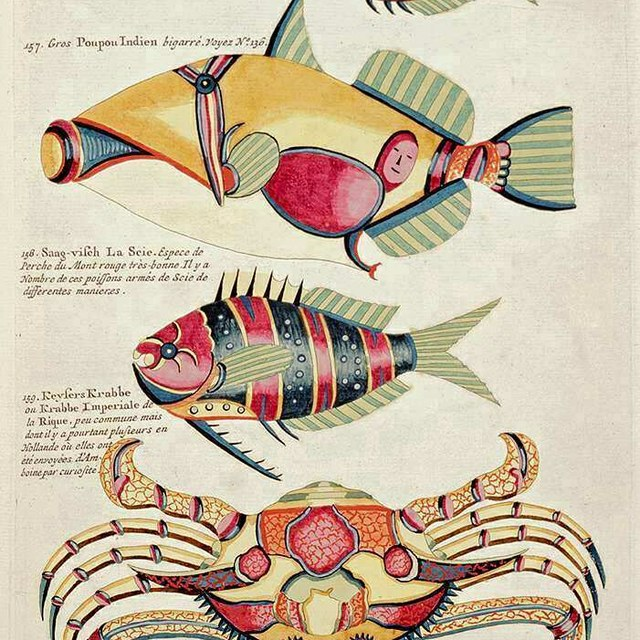

Teylers Museum
Koop je tickets online
Online ticketsNu in het museum
Wat is er te zien en te doen?
Ontdek de collecties
Schatten van kunst en wetenschap
-
Madeliefjes in een zilveren beker
Lucie van Dam van Isselt (1871-1949) (schilder)
-
Klankmenger, naar Helmholtz
Koenig, Rudolph, Parijs, 1865
-
Renard, Louis (1678/79-1746)
Poissons ecrevisses et crabes, de diverses couleurs et figures extraordinaires, que l' on trouve autour des Isles Moluques, et sur les côtes des Terres Australes.
-
Adam en Eva
Albrecht Dürer (1471 - 1528) (graveur), 1504
-
Kinderen in het duin
George Hendrik Breitner (1857-1923) (schilder), ca. 1884 - 1886
-
Ottens Reinier (1698-1750)
Atlas major, cum generales omnium totius orbis [...] tabulas geographicas continens.
Nieuwsberichten
Lees het laatste nieuws
-
Hare Majesteit Koningin Máxima opent Pieter Teylers Huis

Op dinsdagochtend 30 november
-
Pieter Teylers Huis gaat open op 5 december
Vanaf vandaag kun je tickets bestellen voor je museumbezoek inclusief het huis
-
Brievenproject kunstenaar pietsjanke fokkema
08-11-2021 | Mister Motley publiceert vandaag de eerste brief aan Teylers Museum